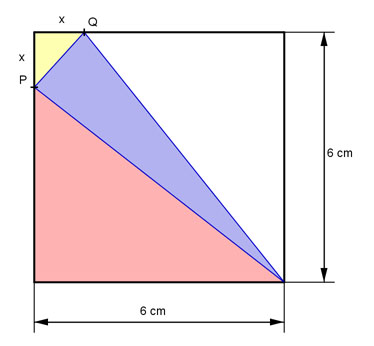
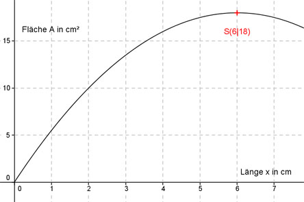

Aufgabe 127 Für welche Länge x wird die blaue Dreiecksfläche am größten?  Blaue Fläche A = 6 cm*6 cm - gelbe Fläche - 2*rote Fläche Die gelbe und die rote Fläche sind jeweils rechtwinklige Dreiecke. x * x Gelbe Fläche = -------- 2 (6 - x) * 6 Rote Fläche = -------------- 2 (6 - x) * 6 x * x Blaue Fläche A = 6 cm * 6 cm - 2 * -------------- - -------- 2 2 Blaue Fläche A = 36 cm² - 36 + 6x - 0,5 * x2 A(x) = -0,5x2 + 6x Dies ist die Funktionsgleichung einer nach unten geöffneten, gestauchten Parabel, deren höchster Punkt der Scheitelpunkt ist. A(x) = -0,5x2 + 6x |:(-0,5) A(x) - ------ = x2 - 12x 0,5 Quadratische Ergänzung: A(x) - ------ = x2 - 12x + 36 - 36 0,5 A(x) - ------ = (x - 6)2 - 36 |*(-0,5) 0,5 mit x2 - 12x + 36 = (x - 6)2 A(x) = -0,5(x - 6)2 + 18 Scheitelpunkt abgelesen: S(6|18) Die Scheitelpunktkoordinaten bedeuten: Ist die Länge x = 6 cm entsteht die größte Fläche A = 18 cm². Der Punkt P wandert ganz nach unten, der Punkt Q ganz nach rechts. Die Dreiecksfläche ist die Hälfte der Quadratfläche. 